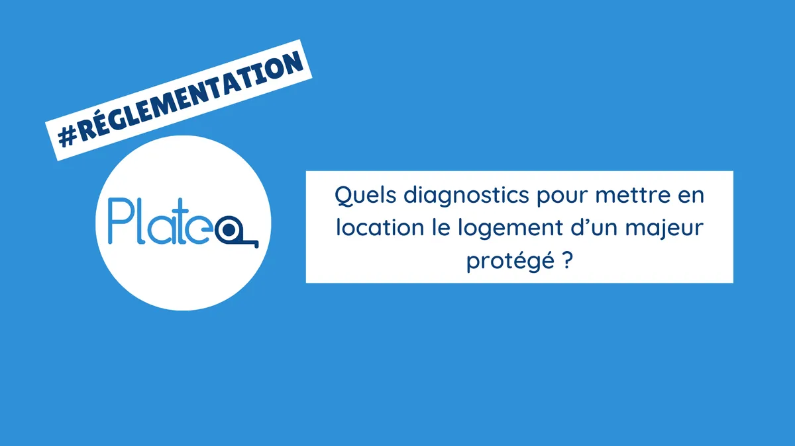

Les informations contenues dans cet article sont à jour à sa date de publication.
Il est possible que la réglementation évolue dans le temps.
La mise en location d'un logement peut être une tâche complexe, surtout lorsqu'il s'agit de louer un logement appartenant à un de vos bénéficiaires.
Vous devez mettre en location un ou plusieurs logements ? Vous ne savez pas quels diagnostics faire ?
Dans cet article, nous allons voir quels diagnostics sont nécessaires pour mettre en location le logement d'un majeur protégé.
Le constat de risque d'exposition au plomb (CREP)
Le constat de risque d'exposition au plomb (CREP) est un diagnostic obligatoire pour les logements construits avant 1949 et qui sont destinés à la location.
Ce diagnostic permet de détecter la présence de plomb dans les peintures du logement.
En effet, le plomb peut être très dangereux pour la santé, surtout chez les enfants.
Le diagnostic de performance énergétique (DPE)
Le diagnostic de performance énergétique (DPE) est un diagnostic obligatoire pour tous les logements destinés à la location.
Ce diagnostic permet de connaître la consommation d'énergie du logement et de fournir des recommandations pour améliorer sa performance énergétique.
Le DPE est réalisé par un professionnel et doit être inclus dans l'annonce de location.
Il permet aux locataires de savoir à quoi s'attendre en termes de factures d'énergie et peut également influencer leur décision de louer le logement.
Le diagnostic gaz
Le diagnostic gaz est obligatoire pour les logements disposant d'une installation de gaz de plus de 15 ans.
Ce diagnostic permet de vérifier la conformité de l'installation et de détecter d'éventuelles fuites de gaz.
Il est important de réaliser ce diagnostic pour garantir la sécurité des locataires et éviter tout accident lié au gaz.
Le diagnostic électrique
Le diagnostic électrique est obligatoire pour les logements disposant d'une installation électrique de plus de 15 ans.
Ce diagnostic permet de vérifier la conformité de l'installation et de détecter d'éventuels dangers électriques.
Il est important de réaliser ce diagnostic pour garantir la sécurité des locataires et éviter tout accident lié à une installation électrique défectueuse.
Si des anomalies sont détectées, le propriétaire devra effectuer des travaux de mise aux normes pour garantir la sécurité des futurs locataires.
Le diagnostic amiante
Le diagnostic amiante est obligatoire pour les logements construits avant le 1er juillet 1997 et qui sont destinés à la location.
Il permet de détecter la présence d'amiante dans le logement.
L'amiante est une substance dangereuse pour la santé et peut causer des maladies respiratoires.
Le diagnostic de l'état des risques naturels, miniers et technologiques (ERNT)
Le diagnostic de l'état des risques naturels, miniers et technologiques (ERNT) est obligatoire pour tous les logements destinés à la location.
Il permet de connaître les risques naturels, miniers et technologiques qui peuvent affecter le logement.
Ce diagnostic est important car il permet aux locataires de connaître les risques potentiels auxquels ils peuvent être exposés.
Qui réalise les diagnostics ?
Il est recommandé que les diagnostics soient effectués avant la mise en location par un diagnostiqueur certifié, et idéalement avant même la publication de l'annonce de location.
Conclusion
En conclusion, la mise en location d'un logement appartenant à un majeur protégé nécessite la réalisation de plusieurs diagnostics obligatoires pour garantir la sécurité et la santé des futurs locataires.
Le constat de risque d'exposition au plomb, le diagnostic de performance énergétique, le diagnostic gaz, le diagnostic électrique, le diagnostic amiante et le diagnostic de l'état des risques naturels, miniers et technologiques doivent être réalisés par un diagnostiqueur certifié avant la mise en location.
En respectant ces obligations, vous pourrez proposer un logement sûr et sain aux locataires potentiels.